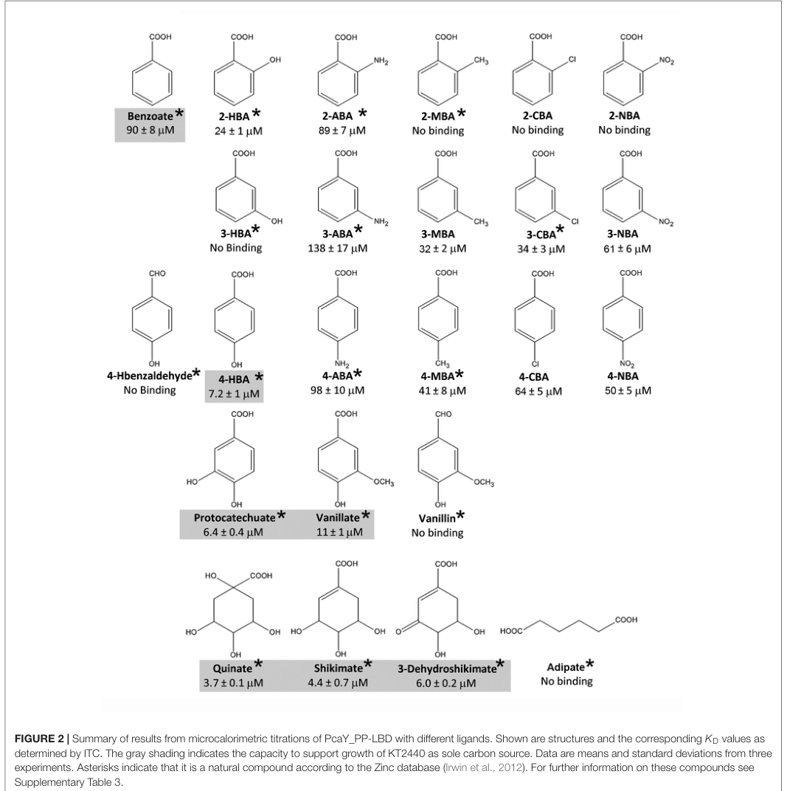

pcaY (PP_2643; PcaY_PP) encodes a membrane methyl-accepting chemotaxis protein (MCP) chemoreceptor with a periplasmic four-helix-bundle ligand-binding domain that directly binds a broad panel of C6-ring carboxylic acids, most tightly quinate, shikimate, 3-dehydroshikimate, and protocatechuate, and mediates flagellar chemotaxis toward these aromatic and non-aromatic acid carbon sources. Ligand binding is sensed at the periplasmic LBD and relayed through a HAMP domain to a cytosolic methyl-accepting signaling region that feeds the CheA/CheW chemosensory pathway.
| GO Term | Evidence | Action | Reason |
|---|---|---|---|
|
GO:0004888
transmembrane signaling receptor activity
|
IEA
GO_REF:0000002 |
ACCEPT |
Summary: PcaY is a transmembrane MCP chemoreceptor that senses ligands at its periplasmic LBD and transmits the signal across the membrane. This is the core molecular function.
Reason: Retain the receptor molecular-function annotation; experimentally supported by direct ligand binding to the LBD and transmembrane signaling architecture.
Supporting Evidence:
file:PSEPK/pcaY/pcaY-uniprot.txt
PcaY recognizes a wide range of compounds
file:PSEPK/pcaY/pcaY-deep-research-falcon.md
receptor activation is reported to occur by **direct chemoeffector binding** to the LBD
|
|
GO:0005886
plasma membrane
|
IEA
GO_REF:0000044 |
ACCEPT |
Summary: PcaY is an inner/cell membrane multi-pass chemoreceptor with a periplasmic ligand-binding domain flanked by two transmembrane helices.
Reason: Retain the specific bacterial cell-membrane location; UniProt and falcon both place PcaY at the inner membrane with a periplasmic LBD.
Supporting Evidence:
file:PSEPK/pcaY/pcaY-uniprot.txt
SUBCELLULAR LOCATION: Cell inner membrane
file:PSEPK/pcaY/pcaY-deep-research-falcon.md
PcaY_PP is a membrane chemoreceptor with a **periplasmic ligand-binding domain** between two predicted transmembrane helices
|
|
GO:0006935
chemotaxis
|
IEA
GO_REF:0000120 |
ACCEPT |
Summary: PcaY mediates chemotaxis toward its aromatic and non-aromatic C6-ring carboxylic acid ligands; a pcaY transposon mutant abolishes this chemotaxis and complementation restores it.
Reason: Retain the chemotaxis process annotation; strong genetic and behavioral evidence supports the requirement of PcaY for chemotaxis to its ligand panel.
Supporting Evidence:
PMID:28620365
Mutation of the pcaY_PP gene abolished chemotaxis to these compounds
file:PSEPK/pcaY/pcaY-deep-research-falcon.md
a **pp2643::mini-Tn5-Km** mutant (disrupting pcaY_PP/PP2643) **abolished chemotaxis** to these ligands and complementation restored responses
|
|
GO:0007165
signal transduction
|
IEA
GO_REF:0000002 |
KEEP AS NON CORE |
Summary: Signal transduction is true for a methyl-accepting chemotaxis receptor but is a broad parent process behind chemotaxis.
Reason: Retain as a non-core parent process; the specific signaling output of PcaY is captured by the chemotaxis (GO:0006935) and receptor (GO:0004888) annotations.
Supporting Evidence:
file:PSEPK/pcaY/pcaY-uniprot.txt
transduce a signal from the outside to the inside of the cell
|
|
GO:0016020
membrane
|
IEA
GO_REF:0000002 |
MARK AS OVER ANNOTATED |
Summary: Generic membrane is less informative than the retained plasma/cell membrane term (GO:0005886).
Reason: Retain GO:0005886 (plasma membrane) instead; the specific inner-membrane localization is the informative location.
Supporting Evidence:
file:PSEPK/pcaY/pcaY-uniprot.txt
SUBCELLULAR LOCATION: Cell inner membrane
|
Q: Which PcaY ligands dominate chemotaxis in mixed aromatic-acid environments that resemble plant root or soil exudates?
Suggested experts: Pseudomonas chemotaxis and aromatic-compound metabolism experts
Experiment: Quantify chemotaxis of wild type, pcaY deletion, and complemented strains toward individual and mixed aromatic acids, then correlate migration with ligand binding affinity and growth on each carbon source.
Type: quantitative chemotaxis and ligand-binding assay
The research report should be a detailed narrative explaining the function, biological processes, and localization of the gene product. Citations should be given for all claims.
You should prioritize authoritative reviews and primary scientific literature when conducting research. You can supplement
this with annotations you find in gene/protein databases, but these can be outdated or inaccurate.
We are specifically interested in the primary function of the gene - for enzymes, what reaction is catalyzed, and what is the substrate specificity? For transporters, what is the substrate? For structural proteins or adapters, what is the broader structural role? For signaling molecules, what is the role in the pathway.
We are interested in where in or outside the cell the gene product carries out its function.
We are also interested in the signaling or biochemical pathways in which the gene functions. We are less interested in broad pleiotropic effects, except where these elucidate the precise role.
Include evidence where possible. We are interested in both experimental evidence as well as inference from structure, evolution, or bioinformatic analysis. Precise studies should be prioritized over high-throughput, where available.
The UniProt target (Q88JK6) is described as methyl-accepting chemotaxis protein PcaY from Pseudomonas putida strain KT2440, with ordered locus name PP_2643. The primary literature that explicitly matches this KT2440 locus is the characterization of ORF PP2643, named PcaY_PP, in P. putida KT2440 (the same strain context as UniProt Q88JK6) (fernandez2017metabolicvaluechemoattractants pages 2-3, fernandez2017metabolicvaluechemoattractants pages 3-5). In this work, PP2643 is treated as a chemoreceptor homologous to PcaY from P. putida F1 (fernandez2017metabolicvaluechemoattractants pages 2-3). Therefore, literature on PcaY_PP/PP2643 in KT2440 is directly relevant to UniProt Q88JK6, while papers referring to “pcaY” in other Pseudomonas strains (e.g., P. putida F1) should be used only as supporting homolog context (fernandez2017metabolicvaluechemoattractants pages 2-3, luu2019hybridtwocomponentsensors pages 8-9).
Methyl-accepting chemotaxis proteins (MCPs) are chemoreceptors that detect extracellular (or intracellular) cues and feed signals into chemosensory pathways controlling flagellum-based chemotaxis. MCPs typically comprise: (i) an input/ligand-binding domain (LBD), frequently periplasmic and flanked by transmembrane helices; (ii) a HAMP signal-conversion module; and (iii) a cytosolic methyl-accepting/adaptation and signaling region that interacts with CheA/CheW and undergoes reversible methylation (ahmad2020bacterialchemotaxisa pages 5-7).
A key contemporary structural concept is that chemoreceptor LBDs often fall into recurring folds, including four-helix bundle (4HB) and dCache domains; signal transduction is frequently initiated via direct ligand binding to these LBDs (matilla2024bacterialaminoacid pages 2-5, matilla2024bacterialaminoacid pages 1-2). Broad-ligand-range receptors exist that bind multiple structurally related compounds, and receptor–ligand affinity can quantitatively track chemotactic output (fernandez2017metabolicvaluechemoattractants pages 1-2, fernandez2017metabolicvaluechemoattractants pages 11-12).
The best-supported primary function of KT2440 PcaY_PP (PP2643; UniProt Q88JK6) is as an MCP chemoreceptor required for chemoattraction to a panel of C6-ring-containing carboxylic acids (including aromatic and non-aromatic carboxylates) via direct ligand binding to its periplasmic LBD (fernandez2017metabolicvaluechemoattractants pages 1-2, fernandez2017metabolicvaluechemoattractants pages 3-5, fernandez2017metabolicvaluechemoattractants pages 11-12).
A central mechanistic finding is that the recombinant PcaY_PP ligand-binding domain binds 17 different C6-ring-containing carboxylic acids with micromolar dissociation constants (KD) spanning 3.7–138 μM, and ligand affinity correlates with the magnitude of chemotaxis in capillary assays (fernandez2017metabolicvaluechemoattractants pages 1-2, fernandez2017metabolicvaluechemoattractants pages 11-12, fernandez2017metabolicvaluechemoattractants media 4d61c4bc, fernandez2017metabolicvaluechemoattractants media 0c26638f). Genetic evidence further supports receptor function: a pp2643::mini-Tn5-Km mutant (disrupting pcaY_PP/PP2643) abolished chemotaxis to these ligands and complementation restored responses (fernandez2017metabolicvaluechemoattractants pages 1-2, fernandez2017metabolicvaluechemoattractants pages 3-5).
PcaY_PP is a broad ligand range chemoreceptor whose tightest-binding ligands were reported as quinate, shikimate, 3-dehydroshikimate, and protocatechuate (fernandez2017metabolicvaluechemoattractants pages 11-12). These compounds lie at the interface between the shikimate biosynthetic pathway and quinate/shikimate-related catabolic routes, suggesting that PcaY_PP helps cells navigate toward metabolically valuable aromatic-related intermediates present in soil/rhizosphere contexts (fernandez2017metabolicvaluechemoattractants pages 11-12).
In addition to KT2440 PcaY_PP, homologous PcaY receptors (e.g., in P. putida F1) have been linked to responses to aromatic acids such as benzoate, 4-hydroxybenzoate, protocatechuate, vanillate/vanillin, and related molecules—supporting a conserved “aromatic-acid/carboxylate chemotaxis receptor” role across strains (fernandez2017metabolicvaluechemoattractants pages 2-3, luu2019hybridtwocomponentsensors pages 1-2, luu2019hybridtwocomponentsensors pages 8-9).
PcaY_PP is a membrane chemoreceptor with a periplasmic ligand-binding domain between two predicted transmembrane helices; in KT2440 PcaY_PP, the LBD was operationally defined as aa 44–196 between transmembrane regions (fernandez2017metabolicvaluechemoattractants pages 2-3). Heterologous expression studies with PcaY fusions show predominant membrane localization (and polar localization consistent with chemosensory arrays) in a large fraction of cells, supporting its role as a cell-surface chemoreceptor (roggo2018heterologousexpressionof pages 9-11).
Isothermal titration calorimetry measurements show binding of 17 ligands with KD = 3.7–138 μM (fernandez2017metabolicvaluechemoattractants pages 1-2, fernandez2017metabolicvaluechemoattractants media 4d61c4bc). Analytical ultracentrifugation indicated that ligand-free PcaY_PP-LBD exists in a monomer–dimer equilibrium with self-association KD = 57.5 μM, and that ligand binding shifts the population fully to the dimeric state, a behavior described as a general feature of four-helix bundle LBDs (fernandez2017metabolicvaluechemoattractants pages 1-2).
Quantitative capillary chemotaxis assays show that chemoeffector affinity correlates with response magnitude, and disruption of pcaY_PP/PP2643 eliminates chemotaxis to the receptor’s ligand panel, with complementation restoring chemotaxis (fernandez2017metabolicvaluechemoattractants pages 1-2, fernandez2017metabolicvaluechemoattractants pages 3-5, fernandez2017metabolicvaluechemoattractants media 0c26638f).
Only 7 of the tested PcaY_PP ligands supported growth as sole carbon sources, and the study reports that growth-supporting ligands tended to bind with higher affinity and that KD values correlated with lag phase length, linking ligand recognition to “metabolic value” (fernandez2017metabolicvaluechemoattractants pages 1-2).
P. putida KT2440 is a soil/rhizosphere bacterium with a substantial chemoreceptor repertoire (reported as 27 chemoreceptors), supporting navigation in chemically complex habitats such as plant root exudate gradients (lopezfarfan2019concentrationdependenteffect pages 1-2). Chemotaxis toward root exudates is described as an important prerequisite for efficient root colonization, and KT2440 contains multiple cheA paralogs that link chemosensory signaling to distinct outputs (chemotaxis versus c-di-GMP/biofilm-related signaling) (lopezfarfan2019concentrationdependenteffect pages 1-2).
PcaY_PP’s ligand spectrum (C6-ring carboxylates including protocatechuate and shikimate-related compounds) is consistent with Pseudomonas strategies to locate aromatic- and plant-derived molecules present in soil and rhizosphere environments, potentially facilitating access to nutrients and/or catabolic substrates (fernandez2017metabolicvaluechemoattractants pages 11-12, matilla2024bacterialaminoacid pages 1-2).
Direct 2023–2024 primary research specifically on KT2440 PcaY_PP/PP2643 was not retrieved in the current tool-based search; however, 2024 expert review literature strengthens the mechanistic framework used to interpret PcaY_PP function.
A 2024 review on amino-acid chemotaxis emphasizes that chemoreceptor signaling is commonly initiated by direct ligand binding to four-helix bundle and dCache LBDs, and highlights broad ecological roles (biofilm formation, root/seed colonization, and more), situating P. putida among soil/plant-associated bacteria for which chemotaxis is ecologically important (matilla2024bacterialaminoacid pages 1-2). The same review provides up-to-date structural interpretation for 4HB-type LBDs (ligand binding at a dimer interface, dimer stabilization, cooperativity), which is conceptually aligned with PcaY_PP observations of ligand-induced dimer stabilization in the LBD (fernandez2017metabolicvaluechemoattractants pages 1-2, matilla2024bacterialaminoacid pages 2-5).
PcaY-family receptors have been used to reprogram chemotaxis specificity in E. coli by heterologous expression. In a peer-reviewed implementation, E. coli expressing PcaY displayed a statistically significant chemotactic response to benzoate (e.g., ~1.5-fold attraction in a Tsr-deficient background) and PcaY-mCherry localized to the membrane/poles in ~50–70% of cells, supporting feasibility for chemotaxis-based biosensing of aromatic acids (roggo2018heterologousexpressionof pages 7-9, roggo2018heterologousexpressionof pages 9-11). This provides a concrete real-world direction: deploying PcaY-like MCPs to engineer bacterial taxis for environmental chemical sensing and potentially pollutant targeting (roggo2018heterologousexpressionof pages 7-9).
A widely cited review of chemotaxis and aromatic-compound biodegradation highlights that chemotaxis can increase bioavailability of hydrophobic aromatic pollutants and underscores the importance of identifying MCP–ligand pairs for biodegradation-linked behaviors (ahmad2020bacterialchemotaxisa pages 5-7). Within Pseudomonas, PcaY-like receptors that sense aromatic acids provide a mechanistic entry point to connect chemotactic foraging with downstream aromatic catabolism where these substrates are present (fernandez2017metabolicvaluechemoattractants pages 2-3, ahmad2020bacterialchemotaxisa pages 5-7).
The most direct expert interpretation of PcaY_PP’s physiological logic comes from its detailed biophysical/genetic characterization: receptor–ligand affinity was reported to correlate with both chemotactic response magnitude and growth-associated parameters (lag phase) among growth-supporting ligands, supporting the hypothesis that metabolic potential influences ligand prioritization by broad-range receptors (fernandez2017metabolicvaluechemoattractants pages 1-2). This aligns with modern review perspectives that chemotaxis frequently provides a nutrient-access advantage, especially in complex environments such as rhizospheres (matilla2024bacterialaminoacid pages 1-2).
The following evidence table consolidates the most actionable properties for annotating UniProt Q88JK6 / PP_2643.
| Property | Experimentally supported finding |
|---|---|
| Gene/protein identity | PcaY_PP is the PP2643 chemoreceptor of Pseudomonas putida KT2440, described as homologous to PcaY from P. putida F1; the KT2440 transposon mutant is reported as pp2643::mini-Tn5-Km, linking locus PP2643 to pcaY_PP (user-specified correspondence to UniProt Q88JK6) (fernandez2017metabolicvaluechemoattractants pages 2-3, fernandez2017metabolicvaluechemoattractants pages 3-5) |
| Receptor type / family | Methyl-accepting chemotaxis protein (MCP) / chemoreceptor with broad ligand range for C6-ring carboxylic acids; classified as a 40H / four-helix-bundle-type receptor family in later comparative work (fernandez2017metabolicvaluechemoattractants pages 1-2, roggo2018heterologousexpressionof pages 9-11, luu2019hybridtwocomponentsensors pages 15-16) |
| Cellular localization / topology | The ligand-binding region is a periplasmic LBD defined as aa 44–196, located between two predicted transmembrane helices; UniProt/domain context and MCP architecture are consistent with a membrane receptor containing HAMP and a cytosolic methyl-accepting signaling domain (fernandez2017metabolicvaluechemoattractants pages 2-3, ahmad2020bacterialchemotaxisa pages 5-7) |
| Direct ligand recognition | The recombinant PcaY_PP-LBD directly recognizes 17 C6-ring-containing carboxylic acids by ITC; receptor activation is reported to occur by direct chemoeffector binding to the LBD (fernandez2017metabolicvaluechemoattractants pages 1-2, fernandez2017metabolicvaluechemoattractants pages 11-12) |
| Binding affinity range | Measured KD = 3.7–138 µM across the ligand set, demonstrating micromolar affinity spanning tight to moderate binding (fernandez2017metabolicvaluechemoattractants pages 1-2, fernandez2017metabolicvaluechemoattractants media 4d61c4bc) |
| Tightest-binding ligands | The strongest binders reported were quinate, shikimate, 3-dehydroshikimate, and protocatechuate, compounds at the intersection of quinate catabolism and shikimate biosynthesis (fernandez2017metabolicvaluechemoattractants pages 1-2, fernandez2017metabolicvaluechemoattractants pages 11-12) |
| Functional ligand spectrum | Ligands include both aromatic and non-aromatic C6-ring carboxylates; related PcaY studies and hybrid-receptor assays support responses to 4-hydroxybenzoate, benzoate, protocatechuate, vanillate, vanillin, quinate, and shikimate (fernandez2017metabolicvaluechemoattractants pages 3-5, luu2019hybridtwocomponentsensors pages 1-2, luu2019hybridtwocomponentsensors pages 8-9) |
| Genetic evidence for function | Mutation of pcaY_PP abolished chemotaxis to the tested PcaY_PP ligands, and gene complementation restored the phenotype, providing direct genetic evidence that PcaY_PP is required for these chemotactic responses (fernandez2017metabolicvaluechemoattractants pages 1-2, fernandez2017metabolicvaluechemoattractants pages 3-5) |
| Chemotaxis-response relationship | Chemoeffector affinity correlated with chemotactic response magnitude, linking ligand binding strength to signaling output in capillary assays (fernandez2017metabolicvaluechemoattractants pages 1-2, fernandez2017metabolicvaluechemoattractants pages 11-12, fernandez2017metabolicvaluechemoattractants media 0c26638f) |
| Oligomeric behavior / signaling-relevant biophysics | Ligand-free PcaY_PP-LBD exists in a monomer–dimer equilibrium with self-association KD = 57.5 µM; ligand binding shifted the population to the dimeric state, a behavior noted as characteristic of four-helix-bundle LBDs (fernandez2017metabolicvaluechemoattractants pages 1-2) |
| Growth/metabolic context | Only 7 ligands supported growth as sole carbon sources; ligands that supported growth generally had lower KD values, suggesting preferential recognition of compounds with higher metabolic value (fernandez2017metabolicvaluechemoattractants pages 1-2) |
| Core assay methods | Isothermal titration calorimetry (ITC) for ligand binding, quantitative capillary chemotaxis assays for behavioral responses, analytical ultracentrifugation for oligomerization, plus mutant/complementation genetics (fernandez2017metabolicvaluechemoattractants pages 1-2, fernandez2017metabolicvaluechemoattractants media 4d61c4bc, fernandez2017metabolicvaluechemoattractants media 0c26638f) |
Table: This table summarizes the main experimentally supported properties of the Pseudomonas putida KT2440 chemoreceptor PcaY_PP/PP2643, including identity, topology, ligand spectrum, affinity, genetic evidence, and methods. It is useful as a compact evidence map for functional annotation of UniProt Q88JK6.
Gene/protein: pcaY (PP_2643; UniProt Q88JK6)
Recommended primary function: Membrane-bound methyl-accepting chemotaxis protein (MCP) that mediates chemoattraction by direct binding of multiple C6-ring carboxylic acids (including aromatic acids), with micromolar affinities and experimentally validated requirement for chemotaxis in KT2440 (fernandez2017metabolicvaluechemoattractants pages 1-2, fernandez2017metabolicvaluechemoattractants pages 3-5, fernandez2017metabolicvaluechemoattractants media 4d61c4bc).
Cellular location: Inner membrane with a periplasmic LBD (aa 44–196) between two transmembrane helices and a cytosolic signaling region (fernandez2017metabolicvaluechemoattractants pages 2-3, ahmad2020bacterialchemotaxisa pages 5-7).
Biological process/pathway: Chemosensory signaling controlling chemotaxis toward aromatic-related metabolites (e.g., protocatechuate; quinate/shikimate pathway intermediates) that are relevant to soil/rhizosphere chemical landscapes and metabolic foraging (fernandez2017metabolicvaluechemoattractants pages 11-12, lopezfarfan2019concentrationdependenteffect pages 1-2).
The ligand-binding (ITC KD values) and chemotaxis assay results were extracted from the PcaY_PP characterization study figures summarizing ligand KD values and capillary chemotaxis responses (fernandez2017metabolicvaluechemoattractants media 4d61c4bc, fernandez2017metabolicvaluechemoattractants media 0c26638f).
References
(fernandez2017metabolicvaluechemoattractants pages 2-3): Matilde Fernández, Miguel A. Matilla, Álvaro Ortega, and Tino Krell. Metabolic value chemoattractants are preferentially recognized at broad ligand range chemoreceptor of pseudomonas putida kt2440. Frontiers in Microbiology, May 2017. URL: https://doi.org/10.3389/fmicb.2017.00990, doi:10.3389/fmicb.2017.00990. This article has 50 citations and is from a peer-reviewed journal.
(fernandez2017metabolicvaluechemoattractants pages 3-5): Matilde Fernández, Miguel A. Matilla, Álvaro Ortega, and Tino Krell. Metabolic value chemoattractants are preferentially recognized at broad ligand range chemoreceptor of pseudomonas putida kt2440. Frontiers in Microbiology, May 2017. URL: https://doi.org/10.3389/fmicb.2017.00990, doi:10.3389/fmicb.2017.00990. This article has 50 citations and is from a peer-reviewed journal.
(luu2019hybridtwocomponentsensors pages 8-9): Rita A. Luu, Rebecca A. Schomer, Ceanne N. Brunton, Richard Truong, Albert P. Ta, Watumesa A. Tan, Juanito V. Parales, Yu-Jing Wang, Yu-Wen Huo, Shuang-Jiang Liu, Jayna L. Ditty, Valley Stewart, and Rebecca E. Parales. Hybrid two-component sensors for identification of bacterial chemoreceptor function. Applied and Environmental Microbiology, Nov 2019. URL: https://doi.org/10.1128/aem.01626-19, doi:10.1128/aem.01626-19. This article has 30 citations and is from a peer-reviewed journal.
(ahmad2020bacterialchemotaxisa pages 5-7): Fiaz Ahmad, Daochen Zhu, and Jianzhong Sun. Bacterial chemotaxis: a way forward to aromatic compounds biodegradation. Environmental Sciences Europe, 32:1-18, Mar 2020. URL: https://doi.org/10.1186/s12302-020-00329-2, doi:10.1186/s12302-020-00329-2. This article has 76 citations and is from a peer-reviewed journal.
(matilla2024bacterialaminoacid pages 2-5): Miguel A. Matilla and Tino Krell. Bacterial amino acid chemotaxis: a widespread strategy with multiple physiological and ecological roles. Journal of Bacteriology, Oct 2024. URL: https://doi.org/10.1128/jb.00300-24, doi:10.1128/jb.00300-24. This article has 19 citations and is from a peer-reviewed journal.
(matilla2024bacterialaminoacid pages 1-2): Miguel A. Matilla and Tino Krell. Bacterial amino acid chemotaxis: a widespread strategy with multiple physiological and ecological roles. Journal of Bacteriology, Oct 2024. URL: https://doi.org/10.1128/jb.00300-24, doi:10.1128/jb.00300-24. This article has 19 citations and is from a peer-reviewed journal.
(fernandez2017metabolicvaluechemoattractants pages 1-2): Matilde Fernández, Miguel A. Matilla, Álvaro Ortega, and Tino Krell. Metabolic value chemoattractants are preferentially recognized at broad ligand range chemoreceptor of pseudomonas putida kt2440. Frontiers in Microbiology, May 2017. URL: https://doi.org/10.3389/fmicb.2017.00990, doi:10.3389/fmicb.2017.00990. This article has 50 citations and is from a peer-reviewed journal.
(fernandez2017metabolicvaluechemoattractants pages 11-12): Matilde Fernández, Miguel A. Matilla, Álvaro Ortega, and Tino Krell. Metabolic value chemoattractants are preferentially recognized at broad ligand range chemoreceptor of pseudomonas putida kt2440. Frontiers in Microbiology, May 2017. URL: https://doi.org/10.3389/fmicb.2017.00990, doi:10.3389/fmicb.2017.00990. This article has 50 citations and is from a peer-reviewed journal.
(fernandez2017metabolicvaluechemoattractants media 4d61c4bc): Matilde Fernández, Miguel A. Matilla, Álvaro Ortega, and Tino Krell. Metabolic value chemoattractants are preferentially recognized at broad ligand range chemoreceptor of pseudomonas putida kt2440. Frontiers in Microbiology, May 2017. URL: https://doi.org/10.3389/fmicb.2017.00990, doi:10.3389/fmicb.2017.00990. This article has 50 citations and is from a peer-reviewed journal.
(fernandez2017metabolicvaluechemoattractants media 0c26638f): Matilde Fernández, Miguel A. Matilla, Álvaro Ortega, and Tino Krell. Metabolic value chemoattractants are preferentially recognized at broad ligand range chemoreceptor of pseudomonas putida kt2440. Frontiers in Microbiology, May 2017. URL: https://doi.org/10.3389/fmicb.2017.00990, doi:10.3389/fmicb.2017.00990. This article has 50 citations and is from a peer-reviewed journal.
(luu2019hybridtwocomponentsensors pages 1-2): Rita A. Luu, Rebecca A. Schomer, Ceanne N. Brunton, Richard Truong, Albert P. Ta, Watumesa A. Tan, Juanito V. Parales, Yu-Jing Wang, Yu-Wen Huo, Shuang-Jiang Liu, Jayna L. Ditty, Valley Stewart, and Rebecca E. Parales. Hybrid two-component sensors for identification of bacterial chemoreceptor function. Applied and Environmental Microbiology, Nov 2019. URL: https://doi.org/10.1128/aem.01626-19, doi:10.1128/aem.01626-19. This article has 30 citations and is from a peer-reviewed journal.
(roggo2018heterologousexpressionof pages 9-11): Clémence Roggo, Estelle Emilie Clerc, Noushin Hadadi, Nicolas Carraro, Roman Stocker, and Jan Roelof van der Meer. Heterologous expression of pseudomonas putida methyl-accepting chemotaxis proteins yields escherichia coli cells chemotactic to aromatic compounds. Applied and Environmental Microbiology, Sep 2018. URL: https://doi.org/10.1128/aem.01362-18, doi:10.1128/aem.01362-18. This article has 12 citations and is from a peer-reviewed journal.
(lopezfarfan2019concentrationdependenteffect pages 1-2): Diana López-Farfán, José A. Reyes-Darias, Miguel A. Matilla, and Tino Krell. Concentration dependent effect of plant root exudates on the chemosensory systems of pseudomonas putida kt2440. Frontiers in Microbiology, Jan 2019. URL: https://doi.org/10.3389/fmicb.2019.00078, doi:10.3389/fmicb.2019.00078. This article has 76 citations and is from a peer-reviewed journal.
(roggo2018heterologousexpressionof pages 7-9): Clémence Roggo, Estelle Emilie Clerc, Noushin Hadadi, Nicolas Carraro, Roman Stocker, and Jan Roelof van der Meer. Heterologous expression of pseudomonas putida methyl-accepting chemotaxis proteins yields escherichia coli cells chemotactic to aromatic compounds. Applied and Environmental Microbiology, Sep 2018. URL: https://doi.org/10.1128/aem.01362-18, doi:10.1128/aem.01362-18. This article has 12 citations and is from a peer-reviewed journal.
(luu2019hybridtwocomponentsensors pages 15-16): Rita A. Luu, Rebecca A. Schomer, Ceanne N. Brunton, Richard Truong, Albert P. Ta, Watumesa A. Tan, Juanito V. Parales, Yu-Jing Wang, Yu-Wen Huo, Shuang-Jiang Liu, Jayna L. Ditty, Valley Stewart, and Rebecca E. Parales. Hybrid two-component sensors for identification of bacterial chemoreceptor function. Applied and Environmental Microbiology, Nov 2019. URL: https://doi.org/10.1128/aem.01626-19, doi:10.1128/aem.01626-19. This article has 30 citations and is from a peer-reviewed journal.

id: Q88JK6
gene_symbol: pcaY
product_type: PROTEIN
status: INITIALIZED
taxon:
id: NCBITaxon:160488
label: Pseudomonas putida (strain ATCC 47054 / DSM 6125 / CFBP 8728 / NCIMB 11950 / KT2440)
description: pcaY (PP_2643; PcaY_PP) encodes a membrane methyl-accepting chemotaxis protein (MCP) chemoreceptor with a periplasmic four-helix-bundle ligand-binding domain that directly binds a broad panel of C6-ring carboxylic acids, most tightly quinate, shikimate, 3-dehydroshikimate, and protocatechuate, and mediates flagellar chemotaxis toward these aromatic and non-aromatic acid carbon sources. Ligand binding is sensed at the periplasmic LBD and relayed through a HAMP domain to a cytosolic methyl-accepting signaling region that feeds the CheA/CheW chemosensory pathway.
existing_annotations:
- term:
id: GO:0004888
label: transmembrane signaling receptor activity
evidence_type: IEA
original_reference_id: GO_REF:0000002
review:
summary: PcaY is a transmembrane MCP chemoreceptor that senses ligands at its periplasmic LBD and transmits the signal across the membrane. This is the core molecular function.
action: ACCEPT
reason: Retain the receptor molecular-function annotation; experimentally supported by direct ligand binding to the LBD and transmembrane signaling architecture.
supported_by:
- reference_id: file:PSEPK/pcaY/pcaY-uniprot.txt
supporting_text: PcaY recognizes a wide range of compounds
- reference_id: file:PSEPK/pcaY/pcaY-deep-research-falcon.md
supporting_text: receptor activation is reported to occur by **direct chemoeffector binding** to the LBD
reference_section_type: OTHER
- term:
id: GO:0005886
label: plasma membrane
evidence_type: IEA
original_reference_id: GO_REF:0000044
review:
summary: PcaY is an inner/cell membrane multi-pass chemoreceptor with a periplasmic ligand-binding domain flanked by two transmembrane helices.
action: ACCEPT
reason: Retain the specific bacterial cell-membrane location; UniProt and falcon both place PcaY at the inner membrane with a periplasmic LBD.
supported_by:
- reference_id: file:PSEPK/pcaY/pcaY-uniprot.txt
supporting_text: 'SUBCELLULAR LOCATION: Cell inner membrane'
- reference_id: file:PSEPK/pcaY/pcaY-deep-research-falcon.md
supporting_text: PcaY_PP is a membrane chemoreceptor with a **periplasmic ligand-binding domain** between two predicted transmembrane helices
reference_section_type: OTHER
- term:
id: GO:0006935
label: chemotaxis
evidence_type: IEA
original_reference_id: GO_REF:0000120
review:
summary: PcaY mediates chemotaxis toward its aromatic and non-aromatic C6-ring carboxylic acid ligands; a pcaY transposon mutant abolishes this chemotaxis and complementation restores it.
action: ACCEPT
reason: Retain the chemotaxis process annotation; strong genetic and behavioral evidence supports the requirement of PcaY for chemotaxis to its ligand panel.
supported_by:
- reference_id: PMID:28620365
supporting_text: Mutation of the pcaY_PP gene abolished chemotaxis to these compounds
reference_section_type: ABSTRACT
- reference_id: file:PSEPK/pcaY/pcaY-deep-research-falcon.md
supporting_text: a **pp2643::mini-Tn5-Km** mutant (disrupting pcaY_PP/PP2643) **abolished chemotaxis** to these ligands and complementation restored responses
reference_section_type: OTHER
- term:
id: GO:0007165
label: signal transduction
evidence_type: IEA
original_reference_id: GO_REF:0000002
review:
summary: Signal transduction is true for a methyl-accepting chemotaxis receptor but is a broad parent process behind chemotaxis.
action: KEEP_AS_NON_CORE
reason: Retain as a non-core parent process; the specific signaling output of PcaY is captured by the chemotaxis (GO:0006935) and receptor (GO:0004888) annotations.
supported_by:
- reference_id: file:PSEPK/pcaY/pcaY-uniprot.txt
supporting_text: transduce a signal from the outside to the inside of the cell
- term:
id: GO:0016020
label: membrane
evidence_type: IEA
original_reference_id: GO_REF:0000002
review:
summary: Generic membrane is less informative than the retained plasma/cell membrane term (GO:0005886).
action: MARK_AS_OVER_ANNOTATED
reason: Retain GO:0005886 (plasma membrane) instead; the specific inner-membrane localization is the informative location.
supported_by:
- reference_id: file:PSEPK/pcaY/pcaY-uniprot.txt
supporting_text: 'SUBCELLULAR LOCATION: Cell inner membrane'
references:
- id: GO_REF:0000002
title: Gene Ontology annotation through association of InterPro records with GO terms.
findings:
- statement: Automated InterPro2GO source annotation reviewed against UniProt and literature evidence for this gene.
supporting_text: PcaY recognizes a wide range of compounds
- id: GO_REF:0000044
title: Gene Ontology annotation based on UniProtKB/Swiss-Prot Subcellular Location vocabulary mapping.
findings:
- statement: Automated SubCell source annotation reviewed against UniProt and literature evidence for this gene.
supporting_text: 'SUBCELLULAR LOCATION: Cell inner membrane'
- id: GO_REF:0000120
title: Combined automated GO annotation using multiple IEA methods.
findings:
- statement: Automated combined IEA source annotation reviewed against literature; chemotaxis is experimentally confirmed for PcaY.
supporting_text: Mutation of the pcaY_PP gene abolished chemotaxis to these compounds
- id: file:PSEPK/pcaY/pcaY-uniprot.txt
title: UniProtKB reviewed entry for pcaY
findings:
- statement: PcaY binds a wide range of C6-ring carboxylate compounds, preferentially carbon sources, with tightest binding to quinate, shikimate, 3-dehydroshikimate, and protocatechuate.
supporting_text: Tightest binding compounds are
- statement: PcaY is localized to the cell inner membrane as a multi-pass membrane protein.
supporting_text: 'SUBCELLULAR LOCATION: Cell inner membrane'
- id: PMID:28620365
title: Aromatic acids are chemoeffectors for PcaY_PP, a broad ligand range chemoreceptor of Pseudomonas putida KT2440.
findings:
- statement: The recombinant PcaY_PP ligand-binding domain recognizes 17 different C6-ring carboxylic acids with micromolar affinities, and affinity correlates with chemotactic response magnitude.
supporting_text: the recombinant ligand binding domain (LBD) of PcaY_PP recognizes 17 different C6-ring containing carboxylic acids with KD values between 3.7 and 138 μM and chemoeffector affinity correlated with the magnitude of the chemotactic response
reference_section_type: ABSTRACT
- statement: Disruption of pcaY_PP abolished chemotaxis to its ligands, and gene complementation restored the phenotype, providing direct genetic evidence that PcaY is required for these chemotactic responses.
supporting_text: Mutation of the pcaY_PP gene abolished chemotaxis to these compounds
reference_section_type: ABSTRACT
- id: PMID:33021055
title: The structural basis for signal promiscuity in a bacterial chemoreceptor.
findings:
- statement: Crystal structures of the PcaY_PP ligand-binding domain in complex with protocatechuate, quinate, benzoate, and salicylate define the four-helix-bundle ligand recognition basis for its signal promiscuity.
supporting_text: The structural basis for signal promiscuity in a bacterial chemoreceptor
reference_section_type: TITLE
- id: file:PSEPK/pcaY/pcaY-deep-research-falcon.md
title: Falcon deep research report for pcaY (PP_2643 / PcaY_PP), UniProt Q88JK6
findings:
- statement: PcaY_PP is an MCP chemoreceptor required for chemoattraction to a panel of C6-ring carboxylic acids via direct ligand binding to its periplasmic LBD.
supporting_text: MCP chemoreceptor required for chemoattraction to a panel of C6-ring-containing carboxylic acids
reference_section_type: OTHER
- statement: The recombinant PcaY_PP LBD binds 17 different C6-ring carboxylic acids with micromolar dissociation constants spanning 3.7-138 micromolar.
supporting_text: binds **17 different C6-ring-containing carboxylic acids** with **micromolar dissociation constants (KD)** spanning **3.7–138 μM**
reference_section_type: OTHER
- statement: The tightest-binding ligands are quinate, shikimate, 3-dehydroshikimate, and protocatechuate, compounds at the intersection of shikimate biosynthesis and quinate catabolism.
supporting_text: tightest-binding ligands were reported as **quinate, shikimate, 3-dehydroshikimate, and protocatechuate**
reference_section_type: OTHER
- statement: A pp2643::mini-Tn5-Km transposon mutant abolished chemotaxis to the receptor ligands, and complementation restored the responses, giving direct genetic evidence for receptor function.
supporting_text: a **pp2643::mini-Tn5-Km** mutant (disrupting pcaY_PP/PP2643) **abolished chemotaxis** to these ligands and complementation restored responses
reference_section_type: OTHER
- statement: PcaY_PP is a membrane chemoreceptor with a periplasmic ligand-binding domain located between two predicted transmembrane helices.
supporting_text: PcaY_PP is a membrane chemoreceptor with a **periplasmic ligand-binding domain** between two predicted transmembrane helices
reference_section_type: OTHER
- statement: Heterologous expression of PcaY fusions shows predominant membrane and polar localization consistent with chemosensory arrays.
supporting_text: Heterologous expression studies with PcaY fusions show predominant **membrane localization** (and polar localization consistent with chemosensory arrays)
reference_section_type: OTHER
core_functions:
- description: PcaY is an inner-membrane MCP chemoreceptor that directly binds a broad range of C6-ring carboxylic acids (most tightly quinate, shikimate, 3-dehydroshikimate, and protocatechuate) at its periplasmic ligand-binding domain and transmits the signal across the membrane to drive flagellar chemotaxis toward these aromatic-acid carbon sources.
molecular_function:
id: GO:0004888
label: transmembrane signaling receptor activity
directly_involved_in:
- id: GO:0006935
label: chemotaxis
locations:
- id: GO:0005886
label: plasma membrane
supported_by:
- reference_id: file:PSEPK/pcaY/pcaY-uniprot.txt
supporting_text: Tightest binding compounds are
- reference_id: PMID:28620365
supporting_text: Tightest binding compounds were quinate, shikimate
reference_section_type: ABSTRACT
- reference_id: PMID:28620365
supporting_text: Mutation of the pcaY_PP gene abolished chemotaxis to these compounds
reference_section_type: ABSTRACT
- reference_id: file:PSEPK/pcaY/pcaY-deep-research-falcon.md
supporting_text: MCP chemoreceptor required for chemoattraction to a panel of C6-ring-containing carboxylic acids
reference_section_type: OTHER
- reference_id: file:PSEPK/pcaY/pcaY-deep-research-falcon.md
supporting_text: tightest-binding ligands were reported as **quinate, shikimate, 3-dehydroshikimate, and protocatechuate**
reference_section_type: OTHER
proposed_new_terms: []
suggested_questions:
- question: Which PcaY ligands dominate chemotaxis in mixed aromatic-acid environments that resemble plant root or soil exudates?
experts:
- Pseudomonas chemotaxis and aromatic-compound metabolism experts
suggested_experiments:
- description: Quantify chemotaxis of wild type, pcaY deletion, and complemented strains toward individual and mixed aromatic acids, then correlate migration with ligand binding affinity and growth on each carbon source.
experiment_type: quantitative chemotaxis and ligand-binding assay
{kind=link}